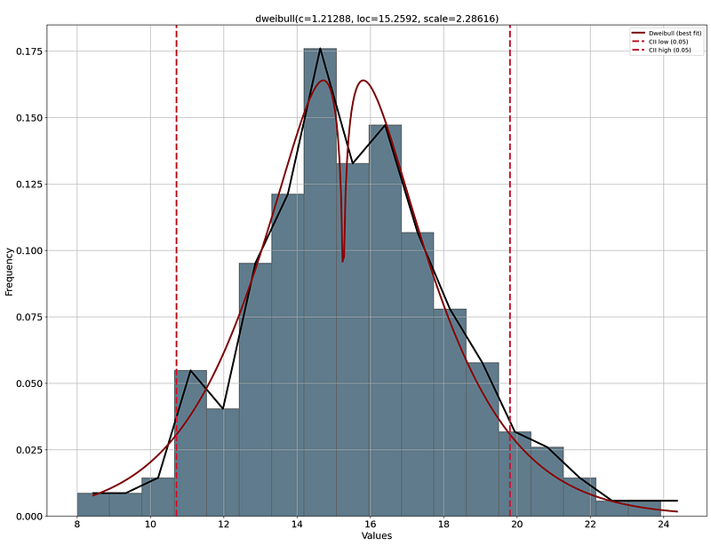
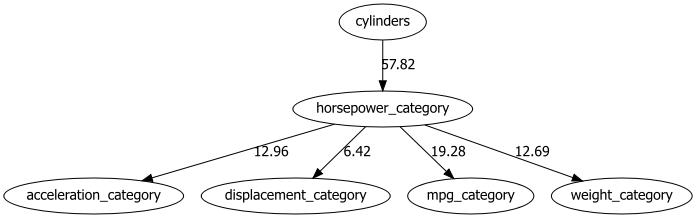
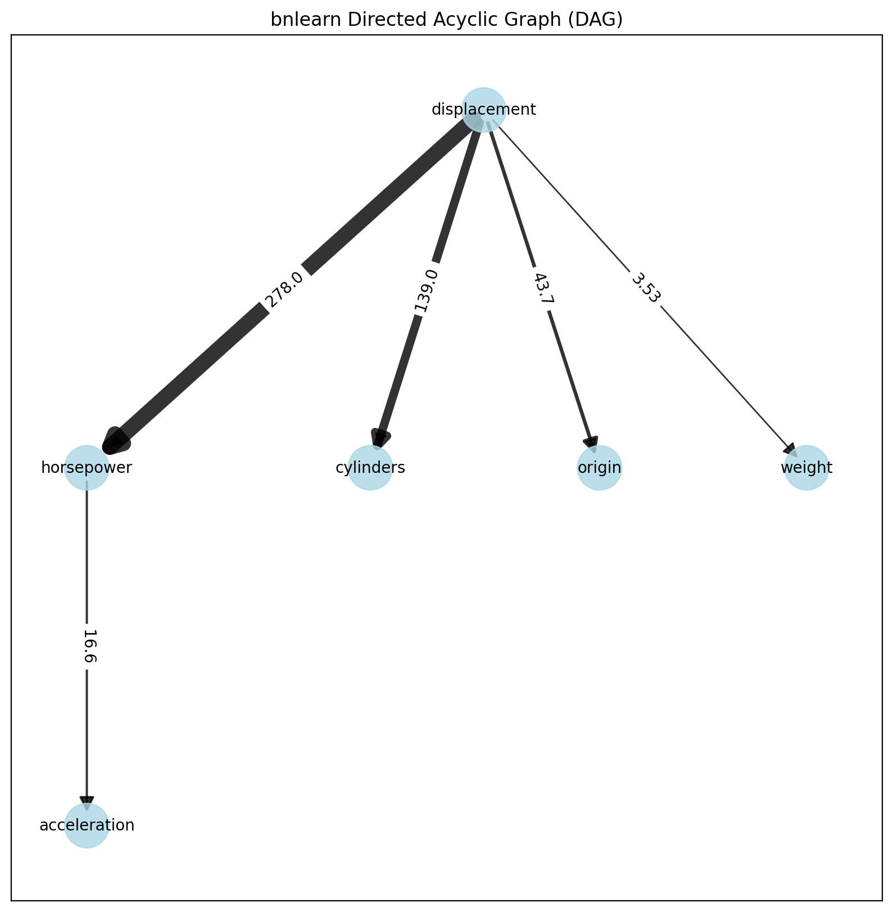
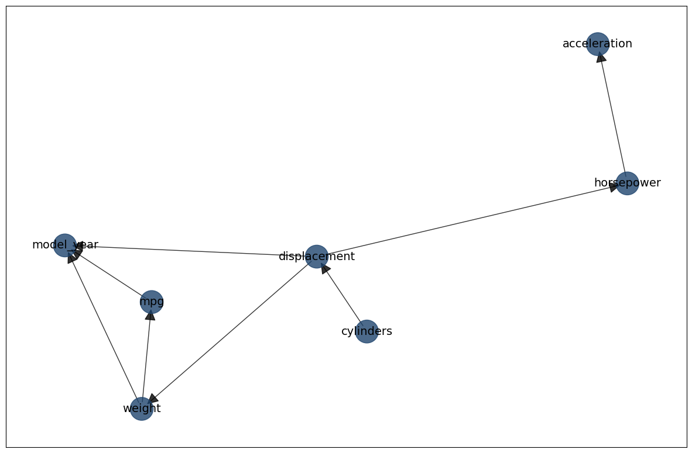
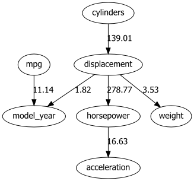

Discretizing
In bnlearn the following options are available to work with continuous datasets:
Discretize continuous datasets manually using domain knowledge.
Discretize continuous datasets using a probability density fitting.
Discretize continuous datasets using a principled Bayesian discretization method.
Model continuous and hybrid datasets in a semi-parametric approach that assumes a linear relationships.
Discretize manually
Discretizing continuous datasets manually using domain knowledge involves dividing a continuous variable into a set of discrete intervals based on an understanding of the data’s context and the relationships between variables. This method allows for meaningful groupings of data points, which can simplify analysis and improve interpretability in models.
By leveraging expertise in the subject matter, the intervals or thresholds can be chosen to reflect real-world significance, such as categorizing weather conditions into meaningful ranges (e.g., “freezing,” “warm,” “hot”). This approach contrasts with automatic binning methods (as depicted in approach 2), such as equal-width or equal-frequency binning, where intervals may not correspond to meaningful domain-specific boundaries.
For instance, lets load the auto mpg data set and based on automotive standards, we can define horsepower categories:
Low: Cars with horsepower less than 100 (typically small, fuel-efficient cars)
Medium: Cars with horsepower between 100 and 150 (moderate performance cars)
High: Cars with horsepower above 150 (high-performance vehicles)
After all continuous variables are catagorized, the normal structure learning procedure can be applied.
# Import
import bnlearn as bn
# Load data set
df = bn.import_example(data='auto_mpg')
# Print
print(df)
# mpg cylinders displacement ... acceleration model_year origin
# 0 18.0 8 307.0 ... 12.0 70 1
# 1 15.0 8 350.0 ... 11.5 70 1
# 2 18.0 8 318.0 ... 11.0 70 1
# 3 16.0 8 304.0 ... 12.0 70 1
# 4 17.0 8 302.0 ... 10.5 70 1
# .. ... ... ... ... ... ... ...
# 387 27.0 4 140.0 ... 15.6 82 1
# 388 44.0 4 97.0 ... 24.6 82 2
# 389 32.0 4 135.0 ... 11.6 82 1
# 390 28.0 4 120.0 ... 18.6 82 1
# 391 31.0 4 119.0 ... 19.4 82 1
#
# [392 rows x 8 columns]
# Define horsepower bins based on domain knowledge
bins = [0, 100, 150, df['horsepower'].max()]
labels = ['low', 'medium', 'high']
# Discretize horsepower using the defined bins
df['horsepower_category'] = pd.cut(df['horsepower'], bins=bins, labels=labels, include_lowest=True)
print(df[['horsepower', 'horsepower_category']].head())
# horsepower horsepower_category
# 0 130.0 medium
# 1 165.0 high
# 2 150.0 medium
# 3 150.0 medium
# 4 140.0 medium
Discretize Automatically: Probability Density
In contradiction to manual discretizing variables, we can also automatically determine the best binning per variable. However, such approaches require extra attention in contrast with manual binning methods, where intervals may not correspond to meaningful domain-specific boundaries. To automatically create more meaningful bins than simple equal-width or equal-frequency binning, we can determine the distribution that best fits the signal and then use the 95% confidence interval to create low, medium, and high categories.
In addition, it is always wise to also have a visual inspection of the distribution plots with the threshold that is determined for the binning. In such a manner you can decide whether the low-end, medium, and high-end is a meaningful threshold. As an example, if we take acceleration and perform this approach, we find a low-end of 8 seconds to ~11 seconds which will represent the fast cars. On the high end are the slow cars with an acceleration of 20 seconds to 24 seconds. The remaining cars fall in the category normal. This seems very plausible so we can continue with these categories. See the code block below.
# Import library
from distfit import distfit
# Initialize and set 95% CII
dist = distfit(alpha=0.05)
# Fit Transform
dist.fit_transform(df['acceleration'])
# Make plot
dist.plot()
plt.show()
bins = [df['acceleration'].min(), dist.model['CII_min_alpha'], dist.model['CII_max_alpha'], df['acceleration'].max()]
# Discretize acceleration using the defined bins
df['acceleration_category'] = pd.cut(df['acceleration'], bins=bins, labels=['fast', 'normal', 'slow'], include_lowest=True)
del df['acceleration']
 |
In case there are multiple continuous variables, we can also automate the distribution fitting:
# For all remaining columns, the same approach can be performed:
cols = ['mpg', 'displacement', 'weight']
# Do for every variable
for col in cols:
# Initialize and set 95% CII
dist = distfit(alpha=0.05)
dist.fit_transform(df[col])
# Make plot
dist.plot()
plt.show()
bins = [df[col].min(), dist.model['CII_min_alpha'], dist.model['CII_max_alpha'], df[col].max()]
# Discretize acceleration using the defined bins
df[col + '_category'] = pd.cut(df[col], bins=bins, labels=['low', 'medium', 'high'], include_lowest=True)
del df[col]
After all continuous variables are categorized, the causal discovery approach for structure learning can be applied.
# Structure learning
model = bn.structure_learning.fit(df, methodtype='hc')
# Compute edge strength
model = bn.independence_test(model, df)
# Make plot and put the -log10(pvalues) on the edges
bn.plot(model, edge_labels='pvalue')
dotgraph = bn.plot_graphviz(model, edge_labels='pvalue')
dotgraph
 |
Discretize Automatically: Principled Bayesian
Automatic discritizing datasets is accomplished by using a principled Bayesian discretization method.
The method is created by Yi-Chun Chen et al [1] in Julia [2]. The code is ported to Python and is now part of bnlearn.
Yi-Chun Chen demonstrates that his proposed method is superior to the established minimum description length algorithm.
A disadvantage of this approach is that you need to pre-define the edges before you can apply the discritization method. The underlying idea is that after applying this discritization method, structure learning approaches can then be applied. To demonstrate the usage of automatically discritizing continuous data, lets use the auto mpg dataset again.
# Import
import bnlearn as bn
# Load data set
df = bn.import_example(data='auto_mpg')
# Print
print(df)
# mpg cylinders displacement ... acceleration model_year origin
# 0 18.0 8 307.0 ... 12.0 70 1
# 1 15.0 8 350.0 ... 11.5 70 1
# 2 18.0 8 318.0 ... 11.0 70 1
# 3 16.0 8 304.0 ... 12.0 70 1
# 4 17.0 8 302.0 ... 10.5 70 1
# .. ... ... ... ... ... ... ...
# 387 27.0 4 140.0 ... 15.6 82 1
# 388 44.0 4 97.0 ... 24.6 82 2
# 389 32.0 4 135.0 ... 11.6 82 1
# 390 28.0 4 120.0 ... 18.6 82 1
# 391 31.0 4 119.0 ... 19.4 82 1
#
# [392 rows x 8 columns]
# Define the edges
edges = [
("cylinders", "displacement"),
("displacement", "model_year"),
("displacement", "weight"),
("displacement", "horsepower"),
("weight", "model_year"),
("weight", "mpg"),
("horsepower", "acceleration"),
("mpg", "model_year"),
]
# Create DAG based on edges
DAG = bn.make_DAG(edges)
# Plot the DAG
bn.plot(DAG)
# Plot the DAG using graphviz
bn.plot_graphviz(DAG)
We can now discretize the continuous columns as following:
# A good habbit is to set the columns with continuous data as float
continuous_columns = ["mpg", "displacement", "horsepower", "weight", "acceleration"]
# Discretize the continous columns by specifying
df_discrete = bn.discretize(df, edges, continuous_columns, max_iterations=1)
# mpg cylinders ... model_year origin
# 0 (17.65, 21.3] 8 ... 70 1
# 1 (8.624, 15.25] 8 ... 70 1
# 2 (17.65, 21.3] 8 ... 70 1
# 3 (15.25, 17.65] 8 ... 70 1
# 4 (15.25, 17.65] 8 ... 70 1
# .. ... ... ... ... ...
# 387 (25.65, 28.9] 4 ... 82 1
# 388 (28.9, 46.6] 4 ... 82 2
# 389 (28.9, 46.6] 4 ... 82 1
# 390 (25.65, 28.9] 4 ... 82 1
# 391 (28.9, 46.6] 4 ... 82 1
#
# [392 rows x 8 columns]
At this point it is not different than any other discrete data set. We can specify the DAG together with the
discrete data frame and fit a model using bnlearn.
Structure learning
We will learn the structure on the discretezed continuous data. Note that the data is also discretezed on a set of edges which may introduce a bias in the learned structure.
# Learn the structure
model = bn.structure_learning.fit(df_discrete, methodtype='hc', scoretype='bic')
# Independence test
model = bn.independence_test(model, df, prune=True)
# [bnlearn] >Compute edge strength with [chi_square]
# [bnlearn] >Edge [weight <-> mpg] [P=0.999112] is excluded because it was not significant (P<0.05) with [chi_square]
# Make plot
bn.plot(model, edge_labels='pvalue')
# Make plot with graphviz
bn.plot_graphviz(model, edge_labels='pvalue')
# Create interactive plot
bn.plot(model, interactive=True)
 |
|

Parameter learning
Let’s continue with parameter learning on the continuous data set and see whether we can estimate the CPDs.
# Fit model based on DAG and discretized continous columns
model = bn.parameter_learning.fit(DAG, df_discrete)
# Use MLE method
# model_mle = bn.parameter_learning.fit(DAG, df_discrete, methodtype="maximumlikelihood")
After fitting the model on the DAG and data frame, we can perform the independence test to remove any spurious edges and create a plot. In this case, the tooltips will contain the CPDs as these are computed with parameter learning.
# Independence test
model = bn.independence_test(model, df, prune=True)
# Make plot
bn.plot(model, edge_labels='pvalue')
# Make plot graphviz
bn.plot_graphviz(model, edge_labels='pvalue')
# Create interactive plot.
bn.plot(model, interactive=True)
 |
 |
There are various manners to deeper investigate the results such as looking at the CPDs.
# Print CPDs
print(model["model"].get_cpds("mpg"))
weight |
… |
weight((3657.5, 5140.0]) |
mpg((8.624, 15.25]) |
… |
0.29931972789115646 |
mpg((15.25, 17.65]) |
… |
0.19727891156462582 |
mpg((17.65, 21.3]) |
… |
0.13313896987366375 |
mpg((21.3, 25.65]) |
… |
0.12439261418853255 |
mpg((25.65, 28.9]) |
… |
0.12439261418853255 |
mpg((28.9, 46.6]) |
… |
0.12147716229348882 |
print("Weight categories: ", df_disc["weight"].dtype.categories)
# Weight categories: IntervalIndex([(1577.73, 2217.0], (2217.0, 2959.5], (2959.5, 3657.5], (3657.5, 5140.0]], dtype='interval[float64, right]')
Inferences
Making inferences can be perfomred using the fitted model. Note that the evidence should be discretized for which we can
use the discretize_value function.
evidence = {"weight": bn.discretize_value(df_discrete["weight"], 3000.0)}
print(evidence)
# {'weight': Interval(2959.5, 3657.5, closed='right')}
print(bn.inference.fit(model, variables=["mpg"], evidence=evidence, verbose=0))
mpg |
phi(mpg) |
|---|---|
mpg((8.624, 15.25]) |
0.1510 |
mpg((15.25, 17.65]) |
0.1601 |
mpg((17.65, 21.3]) |
0.2665 |
mpg((21.3, 25.65]) |
0.1540 |
mpg((25.65, 28.9]) |
0.1327 |
mpg((28.9, 46.6]) |
0.1358 |